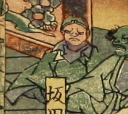

一角の鬼。頭に金輪をつけている。宴席の様子を見ている。緑色の着物と灰色の袴を身につけている。
著作者：一栄斎芳艶（歌川芳艶）／出典：親書誌：U426_nichibunken_0086：丹波國大江山之圖；タンバノクニオオエヤマノズ／日付：2007／資源識別子：U426_nichibunken_0086_0012_0000
Copyright (c)2010- International Research Center for Japanese Studies, Kyoto, Japan. All rights reserved.